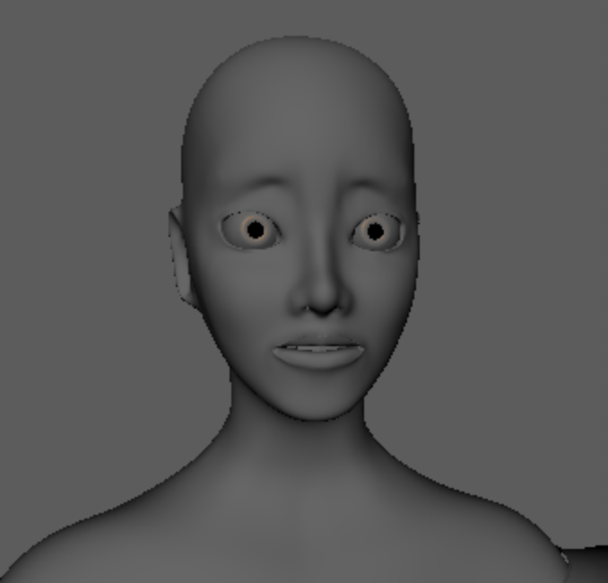

Jen Hoang
April 9
This week, I iterated on the shot2->3 animations. I made them more continuous, adjusted the stumble in shot2, and added more blendshapes/eye darts in shot3. Additionally, I lit shots 1 and 3.
April 2
On this next iteration of Jon's shot2 animation, he is still for a moment before stumbling back. Here, his movements are more refined (additional stumble, more wind push-back, hand curling). Additionally, there are more blinks/facial expressions keyed in (his mouth opens at some points but his lips look the same color as the inside of his mouth right now, so it's hard to tell!).
March 27
I continued iterating on the shot2 animation of Jon. Now, he stumbles back to react to the sand before pushing against the wind with his steps forward. I also sent it for crit to the team, and will work on slowing down the stumble / making it more subtle, based on feedback.
March 19
I iterated on the shot2 animation of Jon. In the newest iterations, I exaggerated Jon's poses and gave him more movement. While I don't have a ready playblast (I had movement in progress, but the poses have been continually changing with discussion that now the movement is now awkward), but I have screenshots of new poses.

March 12
I was able to work past the Houdini problems that I encountered last week (after some help from my team and multiple trials). Then I worked on the animation for the first few shots of the short, where I will also be adding in the petals/wind simulation that I had been working on before. Here's one of my shots in progress, where I modified the first shot of Jon in the desert to better reflect the intention for his emotions (sighing 'dammit im here in this sad mental state again' instead of shocked and looking around).
March 5
This week, I tried continuing to work on Houdini sims, but was blocked by licensing issues when attempting to switch to the educational license. I am not able to open/use Houdini now that the licensing failed. I believe the problem might be happening on my end rather than the server's end. Between my multiple tries, I've been meaning to get help from Ali, but have been honestly really busy/distracted by other classes this week. I will try again to fix it this weekend, and send messages if it still does not work!
February 26
This week, I continued working on the petals/wind simulation in Houdini. It took me a while to adjust the parameters to look correct (a correct balance between object density and wind force) because I initially had the geometry scaled incorrectly. Then, I set the camera and the petals to imitate Jon's POV.
Here is one of the earlier attempts.
Here is the updated simulation.
February 19
This week, I shifted from 2d animatic / blendshape work over to Houdini simulation, using the Educational License. I spent some time at the beginning of the week following Houdini basics/fundamentals videos to get a better understanding of how to navigate the UI (because despite playing around with it last semester, it was still pretty intimidating). Then, I focused on the flower petals / wind sim (for the scene where flower petals fly from Lila to Jon). First, I started by copying a single petal model to multiple points at randomized angles/size, then simulating this group of petals to fall to the ground (to create a pile of petals, with the intention of having the wind blow these petals off the ground). Then I started trying to direct the wind movement. Initial attempts of this failed (Houdini error pictures attached), but I will continue working through the errors.

February 12
This week, I updated Lila's blendshapes for her happy emotions. This included refining the eyebrow movement, modifying her lip placement during smiles (the lips more stretched out horizontally, I moved the edges of the lips inwards, I moved the lips in to sit against her teeth instead of sticking out in front). Additionally, I added details to the way the rest of her space responds to her smile (substle indents/dimples above the corners of her mouth, stretch the nose/mouth area outwards as, moved her cheekbones and under-eyes up).
February 5
This week, I worked on updating the 2d animatic, by modifying old boards so that they followed the Rule of Thirds (eliminating awkward composition) and so that the boards maintained Jon on the left side of the boards, and Lila on the right. Then, I drew more boards that visualized the interaction between Jon and Lila. Here are some over-the-shoulder test shots that ended up not being used in the animatic.
Then, I drew new boards of their hugging sequence.
January 29
This week, I worked on refining the blendshapes for Lila. I focused on creating facial expressions of shock (not sure if this would be used, but just played with the facial movement just in case), a more reserved, calm happy/sad (similar to what it would be when she looks as Jon as she is disappearing), and an excited happiness (first encounter/sight of Jon). I still need to continue working on the smile (right now, the lips aren't as stretched, and they swell too much during her open-mouth smile).
December 4
After so many iterations of the animatic, it had become a combinations of many artists' different styles. The team decided that the board needed clean-up and visual tweaking, in a consistent art style for cohesiveness. Thus, I spent this week drawing a majority of the updated storyboards (44 total boards, not including re-iterations and feedback cycles).
November 20
This week, I shifted focus over to shading and Substance Painter. I started looking into scripting for Substance Painter -> Maya workflows and found that Substance Painter had a pretty well-documented scripting API to create plugins in python and JavaScript. I plan on continuing to explore ways to speed up the Substance Painter -> Maya process over the weekend. In the meantime, I've also made UV maps and textures for a simple flower pot model that attempts to imitate a terracotta material. I plan on continuing to iterate on this, as some of the bumpy texture still looks out of place and I would like to modify the damages/chipped indents to areas that would make more sense (edges, etc).
November 13
This week, I continued to struggle with Houdini / simulations. After a series of crashes/failed attempts, I shifted to compiling style resources for disintegration inspiration (which also included tutorials/demos) for me to test. I plan on cleaning my laptop and continuing to try Houdini simulations -- otherwise, if I else fails, I will probably swap simulation tasks with someone else who can run Houdini smoothly and take on Maya simulations instead (not sure why Houdini is giving me such a hard time). Until then, most of what I have are just crash logs :(


November 6
This week was a lot less fruitful than the previous weeks, as I ran into multiple issues regarding simulation tests. I tried to work through Houdini/Maya integration to establish a strong workflow between the two, but ran into licensing issues that restricted integration. I spent some time trying out workarounds to no avail. After failing to integrate Houdini, I went back to Maya simulation testing as a backup. I created an emission map image sequence in After Effects with turbulence/noise to control the changing opacity of the mesh. While I was able to attach the image sequence to a lambert shader, I wasn't able to attach it to a PxrSurface material without Maya crashing or freezing. After many failed attempts, I took a break from disintegration effects and started exploring hair sim. No tests on hair sim yet, but have been researching / watching videos / gathering resources. Because many of the simulation tests were failed attempts, I don't have another simulation sample test to show, but I have the emission map sequence that I tried assigning, shown here:
October 30
This week, I spent a lot of time working with simulations. In both Maya and Houdini, I spent time further exploring how disintegration and sandstorm simulation should look. I ran an nParticles test in Maya to visualize disintegration, which I plan to layer with the texture/emission maps applied to the objects' shaders to give an illusion of disintegration without actually modifying the geometry.


October 23
This week, I transitioned from animatic work (sketched some boards that never main it into the end product) to simulation research and testing.
First, I researched different methods of simulating dust/sand/disintegration together with Ethan and compiled some resources onto the simulation slidedeck. Then, I tried a couple of them out to test out dust effects using Maya fluids. I started the early stages of a disintegration test, where I animated transparency maps across an object to test how we can control where the mesh would disappear. The next stages would be to translate the shape of the object into particles (probably will test with nParticles) and have those particles move in line with the transparency map. I also compiled a style moodboard to figure out what kind of disintegration effect we wanted to pursue and discussed our different options with the rest of the team.


October 16
This week, I met up with some other teammates to collaborate on the animatic and talk through our current storyboards. We made sketches and comments on a jamboard to make a concrete animatic plan before splitting up storyboard tasks. I drew a sequence of storyboards that depicted the interaction between the man and the mirage.
October 9
With the rest of the team, we talked about how we could modify the animatic to evoke the emotions that the story intends. In order to do this, we drafted updated storyboards that provided more POV shots and highlighted emotions on the main character's face. This week, I drew a sequence of boards that showed the main character reaching towards the mirage's hand before passing through it (from a POV angle). Additionally, I colored in one of the expression sheet sketches to map out the coloring / facial featuers of the main character.
October 4
I continued working on character design with the rest of the team, primarily considering the costuming, body type, and ethnic influences for the two characters. Then, once we pinned down our visual pursuits, I iterated on the character expression sheets that I made last time. For this sheet, I included various expressions of sadness at varying levels of intensity and nuance.
October 2
This week, I worked on the character design, and discussed some of the key features of the protagonist with the team. We also talked about the symbolism/intended feelings that the designs are meant to invoke. I then drew the character expression sheets for the main character.